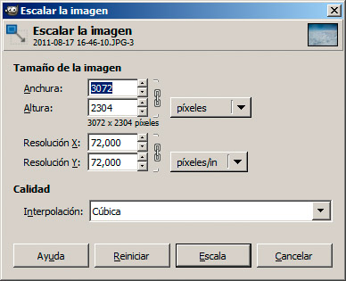
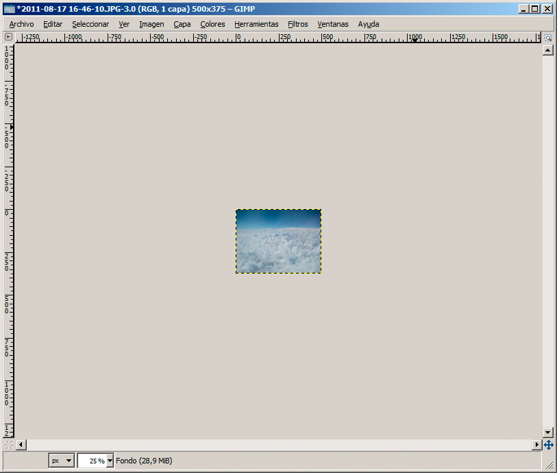
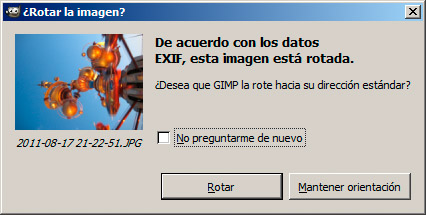
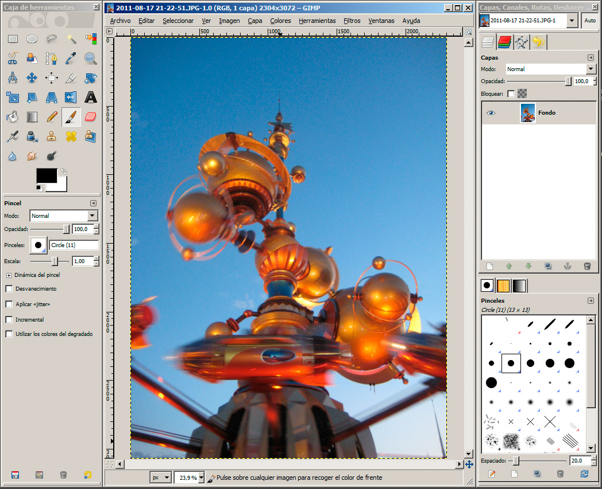
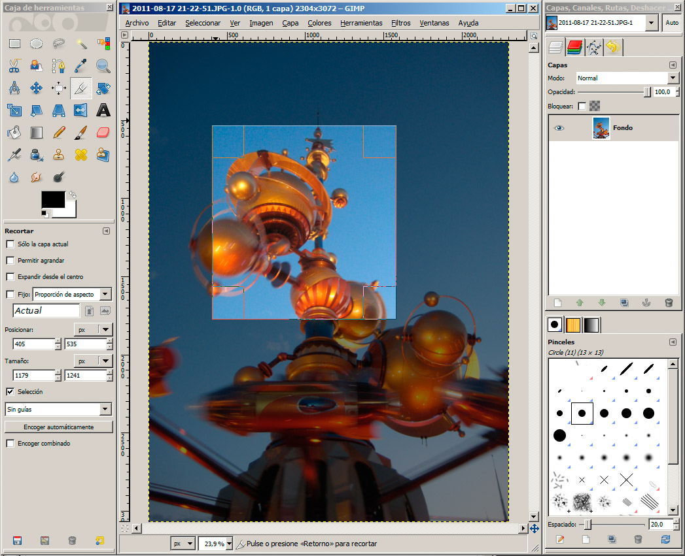
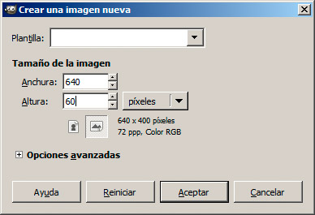
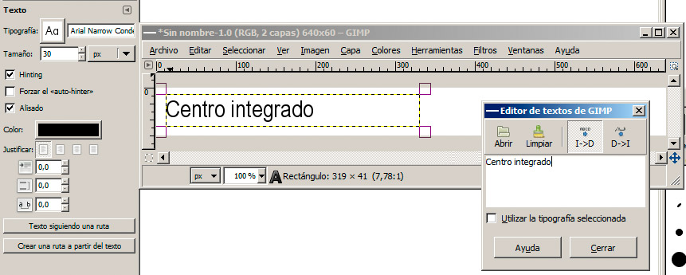
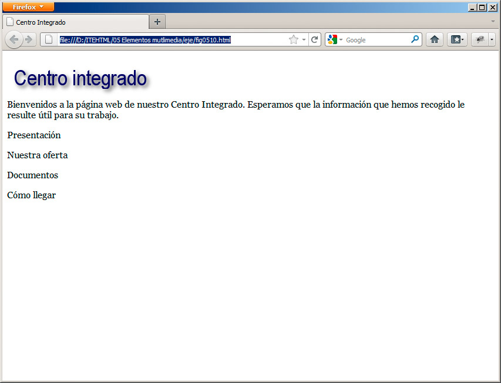
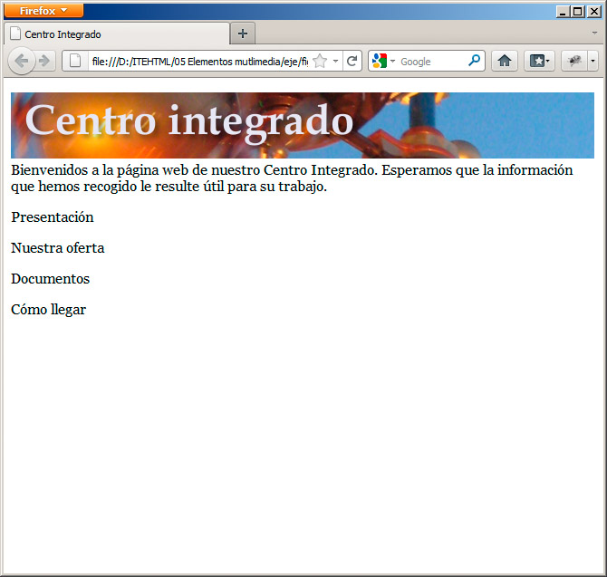

Sigamos estos pasos para conseguirlo:
1. Abrimos Gimp y cargamos la imagen que vamos a redimensionar con Archivo>Abrir.
2. En el menú Imagen seleccionamos la opción Escalar la imagen. Aparecerá el cuadro de la figura:

3. Indicamos los valores que se ajusten al espacio que van a ocupar en la página web. Mientas los pequeños eslabones de cadena permanezcan unidos, la modificación de un valor hará que el otro también cambie.
4. Para terminar hacemos clic en el botón Escala. La imagen se reducirá inmediatamente. Ahora guardaremos los cambios con Archivo>Guardar.

Nota
Si no quieres perder la imagen original, puedes utilizar la opción Archivo>Guardar como e indicar un nombre diferente para la imagen. Así se mantendrán las dos.
Mediante algún explorador de archivos puedes observar hasta qué punto se ha reducido el tamaño del archivo. En nuestro ejemplo, una imagen de 3072x2304 píxeles ocupaba 2 Mb y al convertirla a 500x375 píxeles pasó a ocupar 44 Kb. Medido en kilobytes, pasamos de 2000 a 44. Eso supone ganar mucho tiempo al transferir la imagen por Internet.
Otras técnicas útiles con Gimp
Revisaremos a continuación tres técnicas que suelen aplicarse, al trabajar con imágenes para una página web.
Rotar una imagen
La primera de ellas consiste en tomar una imagen y rotarla en algún sentido, para hacerla vertical. Este proceso lo hacen automáticamente muchos programas en la actualidad pero, para incorporarla a una página web, necesitaremos hacer el cambio manualmente.
Esto se consigue siguiendo estos pasos:
1. Abrimos Gimp y cargamos la imagen que vamos a rotar. Aparecerá el cuadro de diálogo de la figura:

2. Hacemos clic en el botón Rotar y la imagen se cargará con la orientación correcta, como se ve en la figura. Guardamos la imagen.

Con esos pasos habremos terminado la rotación.
No obstante, si no aparece ese cuadro de diálogo o queremos rotar la imagen en otra dirección, podemos emplear las opciones del menú Imagen>Transformar para aplicar los cambios. Si además queremos realizar una rotación más compleja, que no se limite a 90 grados, podemos hacerlo mediante las opciones que encontraremos en Herramientas>Herramientas de Transformación>Rotar, o haciendo clic en el icono Rotar de la barra de herramientas.
Recortar una imagen
De nuevo en Gimp, encontraremos opciones para descartar una parte de la fotografía y quedarnos sólo con la parte que nos interese. Siga estos pasos para extraer una parte de una imagen.
1. Abrimos Gimp y cargamos la imagen a recortar.
2. Seleccionamos la opción Herramientas>Herramientas de Transformación>Recortar o hacemos clic en el icono en forma de cutter.
3. El cursor cambiará de forma. Ahora trazaremos un rectángulo sobre la zona de la fotografía que queremos conservar. El resto de la imagen quedará oscurecida, como se muestra en la figura:

4. Para ajustar el recorte, arrastraremos uno de los cuadrados de las esquinas o de los controles que hay en cada lateral.
5. Cuando la dimensión sea la correcta, haremos clic dentro de la zona seleccionada para aplicar el recorte.
Nota
Si no nos convence el cambio aplicado, podemos volver a la situación anterior pulsando Ctrl-Z o seleccionado la opción Editar>Deshacer.
6. Guardamos los cambios o seleccionamos Guardar como si se quiere mantener el archivo original.
Ya hemos terminado. Al recortar una imagen, también es un buen momento para comprobar si las dimensiones finales de la imagen son las que buscamos o si, por el contrario, necesitamos ampliarla o reducirla un poco más.
Crear un rótulo
Gimp permite también crear pequeños rótulos, que podemos utilizar a modo de títulos para las diferentes partes del sitio web. Veamos cómo se consigue:
1. Abrimos Gimp y en el menú Archivo seleccionamos la opción Nuevo.
2. En el cuadro de diálogo de la figura seleccionamos las dimensiones que tendrá el rótulo. Debemos recordar lo que hemos visto sobre dimensiones de la pantalla.

3. Haremos clic en la herramienta Texto (en forma de letra A) y a continuación en la imagen. Escribiremos el título o el texto.
4. Utilizando los controles que rodean el cuadro de texto, podemos modificar su tamaño o desplazarlo, si pulsas en su interior. En la barra de herramientas, en la parte inferior, encontramos los controles necesarios para modificar tipo de letra, color y otros aspectos. Todo ello se recoge en la figura:

5. Una vez que el texto tiene el formato apropiado y hemos colocado en la imagen, haremos clic en Cerrar el cuadro de diálogo de edición de texto.
6. En este momento aún podemos añadir algunos efectos al rótulo, mediante las opciones del menú Filtro. En nuestro ejemplo hemos aplicado un sencillo efecto de sombra arrojada. Podemos probar un filtro y, si el resultado no nos convence, podemos deshacer los cambios pulsando Ctrl-Z.
7. Cuando la imagen esté terminada, la guardaremos mediante la opción Archivo>Guardar. Debemos especificar el formato de la imagen; generalmente con PNG o JPG será suficiente. PNG será especialmente útil, si queremos mantener una transparencia del fondo.
Nota
Además de en el formato elegido para la web, suele ser una buena idea la de guardar la imagen en el formato nativo de GIMP, conocido como XCF. De ese modo, podremos retomar la imagen y aplicarle modificaciones, si lo necesitamos. Debemos pensar que las imágenes PNG o JPG no mantienen información sobre cómo se creó la imagen, si llevaba filtros, etc. En cambio, el formato XCF sí lo hace.
La figura muestra el resultado final obtenido al insertar la imagen en nuestra página web.

Lo siguiente que debemos hacer para crear rótulos atractivos es realizar muchas pruebas e investigar las enormes posibilidades de los programas de retoque fotográfico y de dibujo. En la figura mostramos otro ejemplo de rótulo; en este caso, empleando una imagen como fondo a través de una capa.
